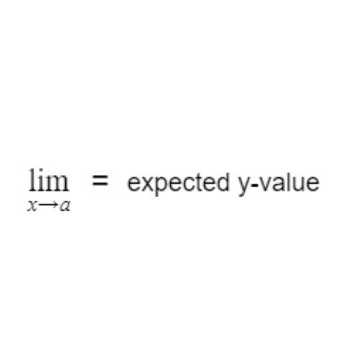

So I stumbled across this limit notation stuff above, but I'm not really sure what it means. I think we should just ignore it; doesn't look important to me uwu
So I stumbled across this limit notation stuff above, but I'm not really sure what it means. I think we should just ignore it; doesn't look important to me uwu
No, QT! The limit is a core Calculus concept, so you need to make sure you understand it! The concept is simple. Essentially what we're asking is this: as our x-value approaches a particular value, what is our expected y-value? Look at the graph above. As our x-value approaches 1 for the function $x^2$, what is our expected y-value? As we get closer and closer to an x-value of 1, it appears as though we're getting closer and closer to a y-value of 1 as well. The same is true as we approach the limit from the right side. Since it seems like we're approaching the same y-value from both sides, the limit must be one. Above is a graphically representation of this process.
That's great and all, but what if the graph is broken? uwu The actual y-value of this function when $x$ equals 1 is 0, so does that mean that the limit is 0 too? uwu
Nope. In the case you brought up, the limit would still be one. The actual y-value of the function isn't important; what's important is the y-value that it looks like we're approaching. Note that the limit for this function as $x$ approaches 1 would still be 1 even if there was just a hole when $x$ equaled 1.
We can evaluate limits without graphs too if we just have the equations. In the example above, we have a function that's entirely $x^2$ for all x-values except one. As a result, we take the limit as x approaches one for both equations. If they're equal, the limit exists!
That's great and all, but what if I rip the graph apart like I did above? uwu What would the limit be as $x$ approaches one? Is it one? Two? A million? Or did I break it? uwu
Would you stop making things so complicated? This example isn't all that different from the one before. If we look at things graphically, it looks as though we're approaching a y-value of one as $x$ approaches one from the left. However, if we approach the same x-value from the right, it looks as though we're approaching a y-value of 2. Since the right-sided limit doesn't match the left-sided limit, no limit exists, even if a y-value exists at $x = 1$. We can come to the same conclusion by evaluating things algebracially like in the example before.
Is this even math Bunn? It seems kinda headass. What if I want $x$ to approach a super duper big value like a billion? uwu What if I want my x-value to approach infinity? OwO What's the limit then?
Well, it depends on the graph. With the function $x^3$ that you found, as $x$ approaches positive infinity, it appears as though $y$ just approaches positive infinity as well. Look at this table of increasing x-values for $x^3$. As our x-value gets bigger, so does our y-value. As a result, if $x$ gets infinitely big, then $y$ should also get infinitely big. The limit in this case would be unbounded. Note that this isn't the case for every scenario where $x$ approaches infinity!
Oh. Well that's kind of anti-climatic uwu Well, since you're making me do this limit garbage, I guess I'll give it a try. For the function of $\sqrt{x}$, the limit is 0 as $x$ approaches 0 uwu.
I appreciate the effort QT, but that's not the right answer. Remember when I said that the left-sided limit needs to match the right-sided limit? Well, in this case, there isn't a left-sided limit because there's nothing to the left of $x$ at 0. Since we can't evaluate the left-sided limit, the limit does not exist. This will be true for all endpoints on all graphs. However, I will admit that you're partially correct. If we're just talking about the right-sided limit as $x$ approaches 0, then yes, the limit is 0.
I'mma keep it real with you chief. While you were talking about that limit garbage in the example before, I found this graph and I've no fucking clue what's going on uwu What's the limit as $x$ approaches 0 for the graph
$sin$(1⁄x) ?
See? This is why limits are important. It's impossible to evaluate this function at $x = 0$ because you can't divide by 0. As a result, let's use limits to approximate. In the graph you have, it's difficult to tell what y-value we're approaching. But look at this close-up of the same function. The closer we get to 0, the faster the graph oscillates between 1 and -1. As a result, when $x = 0$, we can probably conclude that the graph is oscillating infinitely between 1 and -1. The limit does not exist in the case of oscillation.
That was great and all, but let's move on; this is getting boring uwu You told me that we'd be finding the slopes of curves, and all we've been doing is this mumbo jumbo limit bullshit that you just pulled out of your ass uwu
It's not bullshit and I did not pull it out of my ass! It's a real concept and it's very important! Understanding the concept of limits allowed mathematicians to create a method for finding the slopes of curved functions at particular points. In fact, the equation above is an example! Once we understand how to use this limit definition, we can figure out shortcuts to it faster and easier to find the slope of curved functions at particular points.